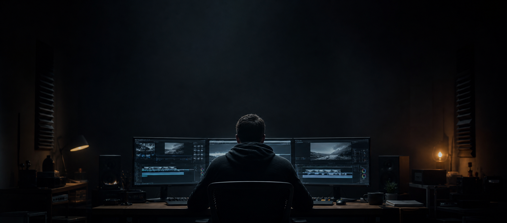
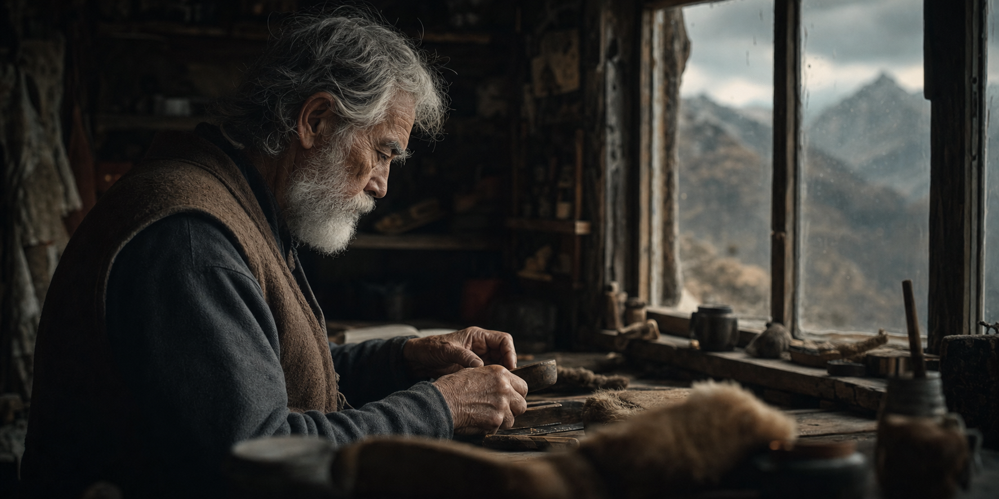
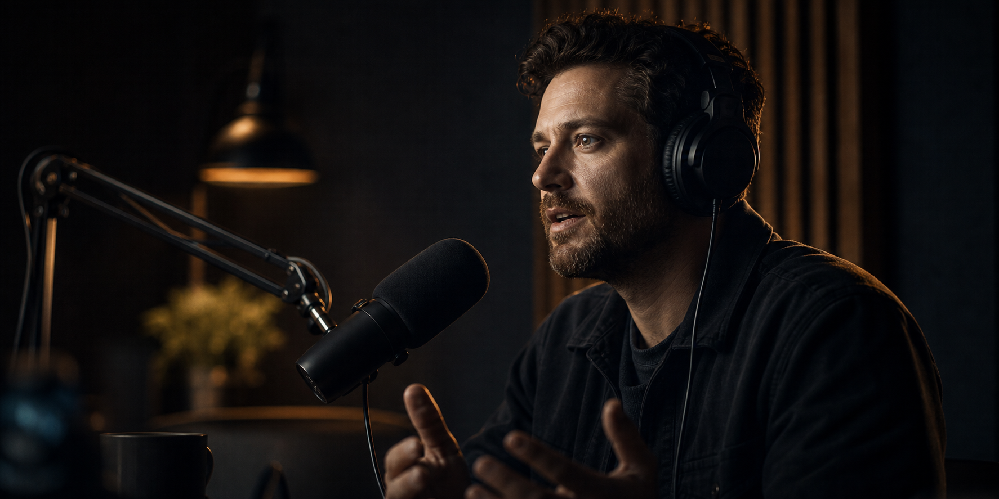
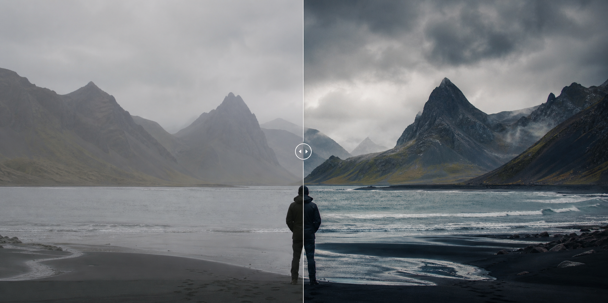

TANISHK / SELECTED WORK
2024 — 2026
SHOWREEL 001
EDITORIAL SYSTEM BOOT
PLEASE STAY FOR THE OPENING SHOT

FREELANCE VIDEO EDITOR / INDIA
TURNING FOOTAGE
INTO STORIES.
00 — THE PHILOSOPHY
The right pause. The right beat. The frame you remember five minutes later. Every edit is built to hold attention and leave a mark.
01 — FEATURED CUT / 2026
SELECTED MOMENTS
ONE MINUTE / FULL VOLUME
SHOWREEL 001
02 — SELECTED WORKS
HOVER TO ROLL FOOTAGE
MOVE TO FEEL THE FRAME

LONGFORM / HUMAN STORIES
VERTICAL / RETENTION-FIRST

CONVERSATIONS / SOCIAL CLIPS
ENERGY / PRECISION CUTS
03 — COLOR & CRAFT
DRAG THE FRAME
RAW TO FINAL GRADE

04 — THE RECEIPTS
NOT VANITY METRICS. PROOF OF REPETITION.
PROJECTS
COMPLETED
WATCH TIME
GENERATED
HOURS
EDITED
OBSESSED WITH
THE NEXT FRAME
05 — THE WORKFLOW
EVERY FRAME EARNS
ITS PLACE ON SCREEN
Find the point of view. Decide what the audience should feel before the first cut lands.
Shape the hook, the build, and the payoff. Retention starts before the timeline opens.
Pull out the moments with weight. Organize the chaos into a story worth following.
Cut with rhythm. Build momentum. Know exactly when to let a frame breathe.
Design the world beneath the visuals. A good cut is seen. A great one is felt.
Polished, platform-ready, and on time. Your video leaves the suite ready to perform.
06 — CLIENT NOTES
“The difference was immediate. Tanishk found a story in footage I thought was unusable and made the whole channel feel premium.”
“He understands retention without making the edit feel loud. The pacing feels invisible, which is exactly why it works.”
“Our short-form clips finally started looking like the quality of the conversations. Clean, sharp, and always on time.”
“The difference was immediate. Tanishk found a story in footage I thought was unusable and made the whole channel feel premium.”
“He understands retention without making the edit feel loud. The pacing feels invisible, which is exactly why it works.”
“Our short-form clips finally started looking like the quality of the conversations. Clean, sharp, and always on time.”
07 — BEHIND THE TIMELINE
I’m Tanishk, a freelance video editor obsessed with the invisible details: the half-second that saves a scene, the sound cue that changes a feeling, the opening frame that stops a scroll.
From high-retention social cuts to slow-burn documentary stories, I make videos that feel intentional, look expensive, and keep people watching.
LET’S MAKE SOMETHING THAT STAYS ↗08 — START A PROJECT
Got footage? Got an idea? Let’s turn it into something people remember.
TANISHK.EDITOR@GMAIL.COM